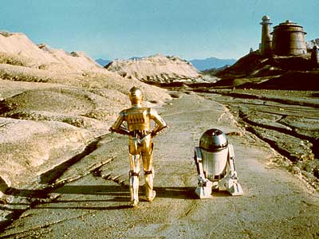
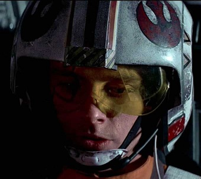
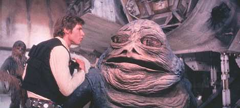
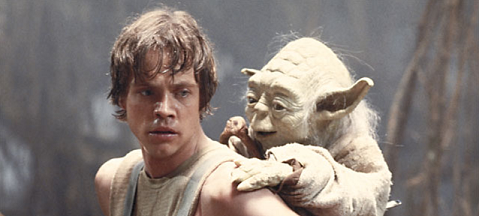
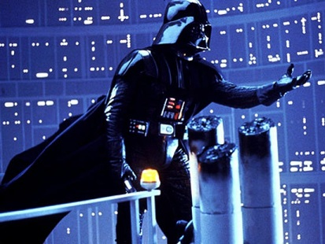
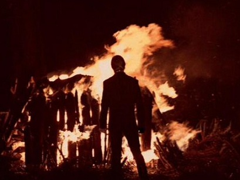

Main events that drive the story forward:
Beginning:

Establishing the ordinary world:
- The Death Star is almost complete, which will allow the Empire to defeat the Rebel Alliance.
- Vader boards another ship in space which he suspects to be a rebel ship that has the plans for the Death Star.
- Vader captures Princess Leia, who hid the plans inside R2D2.
- R2D2 and C3PO escape to the planet Tatooine.
- On Tatooine, Luke Skywalker purchases two droids: C3PO and R2D2.
- Luke cleans up the droids and triggers Leia's message for help from someone named Obi-Wan.
- Luke helps the droids locate Obi-Wan, and Luke learns that he is a Jedi Knight.
- Luke asks about his father, and Obi-Wan tells Luke that he was a great Jedi who was betrayed by Vader.
Incidental Incident:

Propelling the story forward:
- Obi-Wan and Luke hire smugglers Han Solo and Chewbacca to take them to planet Alderaan.
- When they get there, or where it should be, they realize that the planet has been destroyed by the Death Star.
- On the Death Star, Obi-Wan faces Vader in a lightsaber match, and allows himself to be killed and become one with the Force.
- Luke and the others escape with the plans for the Death Star.
- Luke and the Rebels set out to destroy the Death Star.
- Luke himself fires the shot that finishes it.
Middle:
The journey:


- Three years later, Luke travels to find Yoda, who is living in exile on the swampy planet of Dagobah.
- Luke tries to find Yoda in order to start his Jedi training, but is interrupted when Vader lures him into a trap.
- Vader captures Han and the others in the process.
- Luke and Vader duel with lightsabers.
- During the fierce battle, Vader reveals to Luke that he is his father, and tries to turn Luke to the dark side.
- Luke escapes, and manages to rescure Han from Jabba the Hutt, who Han owed a debt to.
- Luke finally returns to Yoda to complete his training, but Yoda in his old age, is on his deathbed.
- Yoda tells Luke that Vader is indeed his father, and Obi-Wan's spirit tells Luke that he must face his father in order to become a Jedi.
- Obi-Wan also tells Luke that Leia is his sister, and Yoda succumbs to his old age.
Climax:
Ultimate goal/risk/challenge:

- The Rebels attack the second Death Star.
- Luke confronts Vader as the evil Emperor Palpatine watches.
- Both Vader and Palpatine wish to turn Luke to the dark side and take him as their apprentice.
- During the lightsaber duel, Luke becomes enraged, and brutally overpowers Vader.
- At the last minute, he stops, realizing that he is about to suffer his father's fate
- Luke spares Vader's life, and declares his allegiant to the Jedi.
- Palpatine becomes enraged by this, and tries to kill Luke with Force lightning.
- Seeing Palpatine go after his son, Vader intervenes, and turns on his master and kill him.
Ending:
Resolution or Evolution:

- Vader suffered mortal wounds in the process of defeating Palpatine.
- The now redeemed Vader, or Anakin Skywalker, dies in Luke's arms.
- Luke becomes a full-fledged Jedi.
- The Rebels successfully destroy the second Death Star.
- Luke cremates his father's body on a funeral pyre.
- Everybody rejoices at the fall of the Empire.